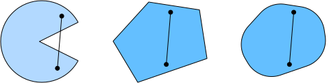
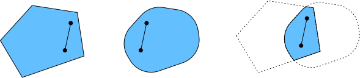
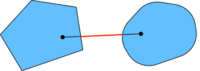
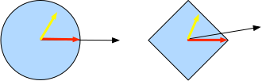

12.2. 凸性¶
凸性在优化算法的设计中起着至关重要的作用。 这主要是因为在这种情形下分析和测试算法要容易得多。 换句话说， 如果算法即使在凸的设定下表现不佳， 那么通常我们也不应指望在其他情形下看到好的结果。 此外，尽管深度学习中的优化问题一般是非凸的，但它们在局部最小值附近往往表现出凸问题的一些性质。这可以引出令人兴奋的新优化变体，例如 (Izmailov et al., 2018)。
%matplotlib inline
import numpy as np
import torch
from mpl_toolkits import mplot3d
from d2l import torch as d2l
%matplotlib inline
from mpl_toolkits import mplot3d
from mxnet import np, npx
from d2l import mxnet as d2l
npx.set_np()
%matplotlib inline
import numpy as np
import tensorflow as tf
from mpl_toolkits import mplot3d
from d2l import tensorflow as d2l
12.2.1. 定义¶
在开始凸分析之前， 我们需要定义凸集（convex set）和凸函数（convex function）。 它们引出了机器学习中常用的数学工具。
12.2.1.1. 凸集¶
集合是凸性的基础。简单地说，向量空间中的集合\(\mathcal{X}\)是凸的，如果对于任意\(a, b \in \mathcal{X}\)，连接\(a\)和\(b\)的线段也位于\(\mathcal{X}\)中。用数学术语来说，这意味着对于所有\(\lambda \in [0, 1]\)，都有
这听起来有点抽象。考虑 图12.2.1。第一个集合不是凸的，因为存在不包含在其中的线段。 另外两个集合没有这个问题。

图12.2.1 第一个集合是非凸的，另外两个是凸的。¶
定义本身并不是特别有用，除非你能用它们做些什么。 在这种情况下，我们可以考察交集，如 图12.2.2 所示。 假设\(\mathcal{X}\)和\(\mathcal{Y}\)是凸集。那么\(\mathcal{X} \cap \mathcal{Y}\)也是凸的。要理解这一点，考虑任意\(a, b \in \mathcal{X} \cap \mathcal{Y}\)。由于\(\mathcal{X}\)和\(\mathcal{Y}\)是凸的，连接\(a\)和\(b\)的线段同时包含在\(\mathcal{X}\)和\(\mathcal{Y}\)中。因此，这条线段也必须包含在\(\mathcal{X} \cap \mathcal{Y}\)中，从而证明了我们的定理。

图12.2.2 两个凸集的交集是凸的。¶
我们可以毫不费力地加强这个结果：给定凸集\(\mathcal{X}_i\)，它们的交集\(\cap_{i} \mathcal{X}_i\)是凸的。 为了看出逆命题不成立，考虑两个不相交的集合\(\mathcal{X} \cap \mathcal{Y} = \emptyset\)。现在取\(a \in \mathcal{X}\)和\(b \in \mathcal{Y}\)。图12.2.3 中连接\(a\)和\(b\)的线段必然包含某个既不在\(\mathcal{X}\)中也不在\(\mathcal{Y}\)中的部分，因为我们假设了\(\mathcal{X} \cap \mathcal{Y} = \emptyset\)。因此，这条线段也不在\(\mathcal{X} \cup \mathcal{Y}\)中，从而证明了一般的凸集并集不必是凸的。

图12.2.3 两个凸集的并集不必是凸的。¶
通常，深度学习中的问题定义在凸集上。例如，\(\mathbb{R}^d\)， 即\(d\)维实数向量的集合， 是凸集（毕竟，\(\mathbb{R}^d\)中任意两点之间的连线仍位于\(\mathbb{R}^d\)中）。在某些情况下，我们处理长度有界的变量，例如由\(\{\mathbf{x} | \mathbf{x} \in \mathbb{R}^d \textrm{ and } \|\mathbf{x}\| \leq r\}\)定义的半径为\(r\)的球。
12.2.1.2. 凸函数¶
有了凸集，我们就可以引入凸函数（convex function）\(f\)。 给定凸集\(\mathcal{X}\)，函数\(f: \mathcal{X} \to \mathbb{R}\)是凸的，如果对于所有\(x, x' \in \mathcal{X}\)以及所有\(\lambda \in [0, 1]\)，都有
为了说明这一点，让我们画出几个函数，并检查哪些函数满足这一要求。 下面我们定义几个函数，既有凸函数也有非凸函数。
f = lambda x: 0.5 * x**2 # Convex
g = lambda x: torch.cos(np.pi * x) # Nonconvex
h = lambda x: torch.exp(0.5 * x) # Convex
x, segment = torch.arange(-2, 2, 0.01), torch.tensor([-1.5, 1])
d2l.use_svg_display()
_, axes = d2l.plt.subplots(1, 3, figsize=(9, 3))
for ax, func in zip(axes, [f, g, h]):
d2l.plot([x, segment], [func(x), func(segment)], axes=ax)
f = lambda x: 0.5 * x**2 # Convex
g = lambda x: np.cos(np.pi * x) # Nonconvex
h = lambda x: np.exp(0.5 * x) # Convex
x, segment = np.arange(-2, 2, 0.01), np.array([-1.5, 1])
d2l.use_svg_display()
_, axes = d2l.plt.subplots(1, 3, figsize=(9, 3))
for ax, func in zip(axes, [f, g, h]):
d2l.plot([x, segment], [func(x), func(segment)], axes=ax)
f = lambda x: 0.5 * x**2 # Convex
g = lambda x: tf.cos(np.pi * x) # Nonconvex
h = lambda x: tf.exp(0.5 * x) # Convex
x, segment = tf.range(-2, 2, 0.01), tf.constant([-1.5, 1])
d2l.use_svg_display()
_, axes = d2l.plt.subplots(1, 3, figsize=(9, 3))
for ax, func in zip(axes, [f, g, h]):
d2l.plot([x, segment], [func(x), func(segment)], axes=ax)
正如预期的那样，余弦函数是非凸的，而抛物线和指数函数是凸的。注意，要使该条件有意义，\(\mathcal{X}\)是凸集这一要求是必需的。否则，\(f(\lambda x + (1-\lambda) x')\)的结果可能没有良好定义。
12.2.1.3. 詹森不等式¶
给定一个凸函数\(f\)， 最有用的数学工具之一 就是詹森不等式（Jensen’s inequality）。 它相当于凸性定义的一种推广：
其中\(\alpha_i\)是非负实数，满足\(\sum_i \alpha_i = 1\)，且\(X\)是随机变量。 换句话说，凸函数的期望不小于期望的凸函数，而后者通常是更简单的表达式。 为了证明第一个不等式，我们每次对求和中的一项反复应用凸性的定义。
詹森不等式的一个常见应用是 用一个更简单的表达式来界定一个更复杂的表达式。 例如， 它可以应用于 部分观测随机变量的对数似然。也就是说，我们使用
因为\(\int P(Y) P(X \mid Y) dY = P(X)\)。 这可以用于变分方法。这里\(Y\)通常是未观测到的随机变量，\(P(Y)\)是对其可能如何分布的最佳猜测，而\(P(X)\)是对\(Y\)积分消去后得到的分布。例如，在聚类中\(Y\)可能是簇标签，而\(P(X \mid Y)\)是应用簇标签时的生成模型。
12.2.2. 性质¶
凸函数有许多有用的性质。下面我们介绍其中几个常用的性质。
12.2.2.1. 局部最小值也是全局最小值¶
首先，凸函数的局部最小值也是全局最小值。 我们可以用如下反证法证明。
考虑定义在凸集\(\mathcal{X}\)上的凸函数\(f\)。 假设\(x^{\ast} \in \mathcal{X}\)是局部最小值： 存在一个小的正值\(p\)，使得对于满足\(0 < |x - x^{\ast}| \leq p\)的\(x \in \mathcal{X}\)，都有\(f(x^{\ast}) < f(x)\)。
假设局部最小值\(x^{\ast}\) 不是\(f\)的全局最小值： 存在\(x' \in \mathcal{X}\)使得\(f(x') < f(x^{\ast})\)。 同时存在 \(\lambda \in [0, 1)\)，例如\(\lambda = 1 - \frac{p}{|x^{\ast} - x'|}\) 使得 \(0 < |\lambda x^{\ast} + (1-\lambda) x' - x^{\ast}| \leq p\)。
然而， 根据凸函数的定义，我们有
这与我们关于\(x^{\ast}\)是局部最小值的论断相矛盾。 因此，不存在\(x' \in \mathcal{X}\)使得\(f(x') < f(x^{\ast})\)。局部最小值\(x^{\ast}\)同时也是全局最小值。
例如，凸函数\(f(x) = (x-1)^2\)在\(x=1\)处有一个局部最小值，它同时也是全局最小值。
f = lambda x: (x - 1) ** 2
d2l.set_figsize()
d2l.plot([x, segment], [f(x), f(segment)], 'x', 'f(x)')
f = lambda x: (x - 1) ** 2
d2l.set_figsize()
d2l.plot([x, segment], [f(x), f(segment)], 'x', 'f(x)')
f = lambda x: (x - 1) ** 2
d2l.set_figsize()
d2l.plot([x, segment], [f(x), f(segment)], 'x', 'f(x)')
凸函数的局部最小值也是全局最小值，这一事实非常方便。 它意味着，如果我们在最小化函数，就不会“卡住”。 不过请注意，这并不意味着全局最小值不可能多于一个，也不意味着它一定存在。例如，函数\(f(x) = \mathrm{max}(|x|-1, 0)\)在区间\([-1, 1]\)上取得其最小值。相反，函数\(f(x) = \exp(x)\)在\(\mathbb{R}\)上不取得最小值：当\(x \to -\infty\)时它渐近于\(0\)，但不存在\(x\)使得\(f(x) = 0\)。
12.2.2.2. 凸函数的下水平集是凸的¶
我们可以通过凸函数的下水平集（below set）方便地 定义凸集。 具体地说， 给定定义在凸集\(\mathcal{X}\)上的凸函数\(f\)， 任意下水平集
都是凸的。
让我们快速证明这一点。回想一下，对于任意\(x, x' \in \mathcal{S}_b\)，我们需要证明只要\(\lambda \in [0, 1]\)，就有\(\lambda x + (1-\lambda) x' \in \mathcal{S}_b\)。 由于\(f(x) \leq b\)且\(f(x') \leq b\)， 根据凸性的定义，我们有
12.2.2.3. 凸性与二阶导数¶
只要函数\(f: \mathbb{R}^n \rightarrow \mathbb{R}\)的二阶导数存在，就很容易检验\(f\)是否为凸函数。 我们只需检查\(f\)的黑塞矩阵是否为半正定：\(\nabla^2f \succeq 0\)，即， 将黑塞矩阵\(\nabla^2f\)记为\(\mathbf{H}\)时， \(\mathbf{x}^\top \mathbf{H} \mathbf{x} \geq 0\) 对所有\(\mathbf{x} \in \mathbb{R}^n\)成立。 例如，函数\(f(\mathbf{x}) = \frac{1}{2} \|\mathbf{x}\|^2\)是凸的，因为\(\nabla^2 f = \mathbf{1}\)，即它的黑塞矩阵是单位矩阵。
形式上，一个二阶可微的一维函数\(f: \mathbb{R} \rightarrow \mathbb{R}\)是凸的， 当且仅当其二阶导数\(f'' \geq 0\)。对于任意二阶可微的多维函数\(f: \mathbb{R}^{n} \rightarrow \mathbb{R}\)， 它是凸的当且仅当其黑塞矩阵\(\nabla^2f \succeq 0\)。
首先，我们需要证明一维情形。 为了看出 \(f\)的凸性蕴含 \(f'' \geq 0\)，我们利用以下事实：
由于二阶导数由有限差分的极限给出，因此可以推出
为了看出 \(f'' \geq 0\)蕴含\(f\)是凸的， 我们利用以下事实：\(f'' \geq 0\)蕴含\(f'\)是单调不减函数。设\(a < x < b\)是\(\mathbb{R}\)中的三个点， 其中\(x = (1-\lambda)a + \lambda b\)且\(\lambda \in (0, 1)\)。 根据中值定理， 存在\(\alpha \in [a, x]\)和\(\beta \in [x, b]\)， 使得
由单调性\(f'(\beta) \geq f'(\alpha)\)，因此
由于\(x = (1-\lambda)a + \lambda b\)， 我们有
从而证明了凸性。
其次，在证明多维情形之前， 我们需要一个引理： \(f: \mathbb{R}^n \rightarrow \mathbb{R}\) 是凸的，当且仅当对所有\(\mathbf{x}, \mathbf{y} \in \mathbb{R}^n\)
是凸的。
为了证明\(f\)的凸性蕴含\(g\)是凸的， 我们可以证明对于所有\(a, b, \lambda \in [0, 1]\)（因此 \(0 \leq \lambda a + (1-\lambda) b \leq 1\)）
为了证明逆命题， 我们可以证明对于 所有\(\lambda \in [0, 1]\)
最后， 利用上面的引理和一维情形的结果， 多维情形 可以如下证明。 多维函数\(f: \mathbb{R}^n \rightarrow \mathbb{R}\)是凸的 当且仅当对所有\(\mathbf{x}, \mathbf{y} \in \mathbb{R}^n\)，\(g(z) \stackrel{\textrm{def}}{=} f(z \mathbf{x} + (1-z) \mathbf{y})\)（其中\(z \in [0,1]\)） 是凸的。 根据一维情形， 这成立当且仅当 \(g'' = (\mathbf{x} - \mathbf{y})^\top \mathbf{H}(\mathbf{x} - \mathbf{y}) \geq 0\)（\(\mathbf{H} \stackrel{\textrm{def}}{=} \nabla^2f\)） 对所有\(\mathbf{x}, \mathbf{y} \in \mathbb{R}^n\)成立， 而根据半正定矩阵的定义，这等价于\(\mathbf{H} \succeq 0\)。
12.2.3. 约束¶
凸优化的一个良好性质是它可以高效地处理约束。也就是说，它允许我们求解约束优化（constrained optimization）问题，其形式为：
其中\(f\)是目标，函数\(c_i\)是约束函数。为了理解它的作用，考虑\(c_1(\mathbf{x}) = \|\mathbf{x}\|_2 - 1\)的情形。此时参数\(\mathbf{x}\)被约束在单位球内。如果第二个约束是\(c_2(\mathbf{x}) = \mathbf{v}^\top \mathbf{x} + b\)，那么这对应于所有位于一个半空间上的\(\mathbf{x}\)。同时满足两个约束相当于在球中选取一个切片。
12.2.3.1. 拉格朗日函数¶
一般来说，求解约束优化问题很困难。解决该问题的一种方法源于物理学，其直觉相当简单。想象一个盒子里的球。球会滚到最低的位置，重力会被盒子侧壁对球施加的力所平衡。简而言之，目标函数的梯度（即重力）将被约束函数的梯度抵消（球必须留在盒子内，因为墙壁会“推回”）。 注意，有些约束可能不是活跃的： 未被球触及的墙壁 无法对球施加任何力。
跳过拉格朗日函数（Lagrangian）\(L\)的推导， 上述推理 可以通过以下鞍点优化问题来表达：
这里变量\(\alpha_i\)（\(i=1,\ldots,n\)）就是所谓的拉格朗日乘子（Lagrange multiplier），它们确保约束被正确执行。它们的取值恰好大到足以确保对所有\(i\)都有\(c_i(\mathbf{x}) \leq 0\)。例如，对于任何自然满足\(c_i(\mathbf{x}) < 0\)的\(\mathbf{x}\)，我们最终会选择\(\alpha_i = 0\)。此外，这是一个鞍点优化问题：我们希望关于所有\(\alpha_i\)最大化\(L\)，同时关于\(\mathbf{x}\)对它最小化。有大量文献解释如何得到函数\(L(\mathbf{x}, \alpha_1, \ldots, \alpha_n)\)。就我们的目的而言，只需知道\(L\)的鞍点就是原始约束优化问题被最优求解的位置。
12.2.3.2. 惩罚¶
至少近似地满足约束优化问题的一种方法是改编拉格朗日函数\(L\)。 我们不是满足\(c_i(\mathbf{x}) \leq 0\)，而是简单地把\(\alpha_i c_i(\mathbf{x})\)加到目标函数\(f(x)\)上。这可以确保约束不会被过度违反。
事实上，我们一直都在使用这个技巧。考虑 3.7节 中的权重衰减。在其中，我们将\(\frac{\lambda}{2} \|\mathbf{w}\|^2\)加到目标函数上，以确保\(\mathbf{w}\)不会变得太大。从约束优化的角度来看，可以看出这将确保对于某个半径\(r\)有\(\|\mathbf{w}\|^2 - r^2 \leq 0\)。调整\(\lambda\)的值可以让我们改变\(\mathbf{w}\)的大小。
一般来说，添加惩罚是确保近似满足约束的一种好方法。在实践中，这比精确满足要鲁棒得多。此外，对于非凸问题，那些使精确方法在凸情形下如此有吸引力的性质（例如最优性）大多不再成立。
12.2.3.3. 投影¶
满足约束的另一种策略是投影。同样，我们之前已经遇到过它们，例如在处理 9.5节 中的梯度裁剪时。在那里，我们通过以下方式确保梯度的长度以\(\theta\)为界：
事实证明，这是\(\mathbf{g}\)到半径为\(\theta\)的球上的一个投影。更一般地说，凸集\(\mathcal{X}\)上的投影定义为
它是\(\mathcal{X}\)中最接近\(\mathbf{x}\)的点。

图12.2.4 凸投影。¶
投影的数学定义可能听起来有点抽象。图12.2.4 对此作了较为清楚的解释。其中我们有两个凸集：一个圆和一个菱形。 同时位于两个集合内部的点（黄色）在投影过程中保持不变。 位于两个集合外部的点（黑色）被投影到 集合内部最接近原始点（黑色）的点（红色）上。 虽然对\(\ell_2\)球来说这会保持方向不变，但一般情况下未必如此，从菱形的情形可以看出这一点。
凸投影的用途之一是计算稀疏权重向量。此时我们将权重向量投影到\(\ell_1\)球上， 这是 图12.2.4 中菱形情形的推广。
12.2.4. 小结¶
在深度学习的背景下，凸函数的主要作用是启发优化算法，并帮助我们详细理解这些算法。在接下来的内容中，我们将看到如何据此推导梯度下降和随机梯度下降。
凸集的交集是凸的。并集则不是。
凸函数的期望不小于期望的凸函数（詹森不等式）。
一个二阶可微函数是凸的，当且仅当其黑塞矩阵（二阶导数矩阵）是半正定的。
凸约束可以通过拉格朗日函数来添加。在实践中，我们也可以简单地用惩罚项把它们加到目标函数中。
投影映射到凸集中最接近原始点的点。
12.2.5. 练习¶
假设我们想通过画出集合内各点之间的所有连线，并检查这些连线是否包含在集合内，来验证集合的凸性。
证明只需检查边界上的点就足够了。
证明只需检查集合的顶点就足够了。
用\(\mathcal{B}_p[r] \stackrel{\textrm{def}}{=} \{\mathbf{x} | \mathbf{x} \in \mathbb{R}^d \textrm{ and } \|\mathbf{x}\|_p \leq r\}\)表示使用\(p\)-范数的半径为\(r\)的球。证明对所有\(p \geq 1\)，\(\mathcal{B}_p[r]\)都是凸的。
给定凸函数\(f\)和\(g\)，证明\(\mathrm{max}(f, g)\)也是凸的。证明\(\mathrm{min}(f, g)\)不是凸的。
证明 softmax 函数的规范化是凸的。更具体地说，证明 \(f(x) = \log \sum_i \exp(x_i)\)的凸性。
证明线性子空间，即\(\mathcal{X} = \{\mathbf{x} | \mathbf{W} \mathbf{x} = \mathbf{b}\}\)，是凸集。
证明在线性子空间满足\(\mathbf{b} = \mathbf{0}\)的情形下，投影\(\textrm{Proj}_\mathcal{X}\)可以写成\(\mathbf{M} \mathbf{x}\)的形式，其中\(\mathbf{M}\)是某个矩阵。
证明对于二阶可微的凸函数\(f\)，可以写成\(f(x + \epsilon) = f(x) + \epsilon f'(x) + \frac{1}{2} \epsilon^2 f''(x + \xi)\)，其中\(\xi \in [0, \epsilon]\)。
给定凸集\(\mathcal{X}\)和两个向量\(\mathbf{x}\)和\(\mathbf{y}\)，证明投影永远不会增大距离，即\(\|\mathbf{x} - \mathbf{y}\| \geq \|\textrm{Proj}_\mathcal{X}(\mathbf{x}) - \textrm{Proj}_\mathcal{X}(\mathbf{y})\|\)。